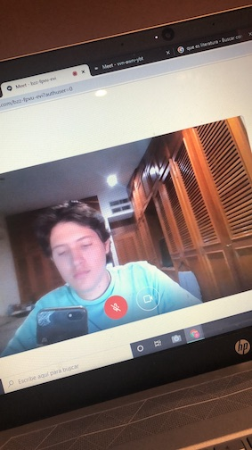
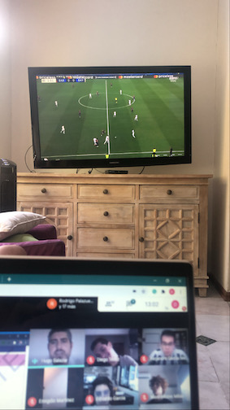

Before Covid-19, we use to go to school, learn, have fun, enjoy the recess with our friends, we stay there about 7 hours 5 days per week, we were so used to that, we have been doing it for 15 years, and one day to another, we weren´t able to come back.
We change the school for a computer, leaving behind the real interaction between students and teachers, needing to learn new ways to teach, learning to use the right platforms and take advantage of all their tools, needing to learn new skills to be able to adapt yourself to this new system
In this section we are going to analyze the disadvantages and the advantages of online learning, which was a change that the pandemic force us to make.
Online school have many advantages, such as you can take your classes using pijama, or you can take your classes from your bed, relaxing, another plus is that you can wake up exactly when the class is starting, this would be impossible in the usual system, because you should wake up a considerable time early, to be ready on time, take a bath, take breakfast, a ride to your school
Another advantage is that you can take classes and exams wherever you are, for example, I was able to take my chemistry final test relaxing on the beach, in Altata, it was awesome because when I finished the test I was able to enjoy the beach with my family
Something to take in count also, is that many students reduce the use of white paper, now we don´t need to print things and write on white papers, with online schooling we can do everything on the computer, making it easier and faster to work, at the same time you help the planet decreasing the use of white paper
Finally, you can take advantage from this system, because the platforms where you should upload your homeworks and exams, are smart apps, which help you remembering due dates, and send you notifications that help you don´t to forget your school responsabilities
One of the main issues at online learning is the internet issues, everyone is using internet and if you have many brothers or sisters taking classes too, the internet gets saturated, so you have troubles to conect to the class, and it is difficult to be attending the class when you have internet problems.
Also, working at home, there are a lot of distractons, because you can use your cellphone when you want and nobody will be telling you what to do, also the xbox, it is to easy to play videogames during online classes, you can enter to the class and continue sleeping, you can do whatever you want and no one will be right after you telling what to do, so, it makes this more difficult because it´s to easy to lose the attention. Also, when are sports events during classes you can easily stop paying attention on class and start watching it on TV
Also, I believe that during this time of online school, there has been a big problem related to lack of learning, most of the people isn´t learning as they should, because is to easy to be lazy and copy homeworks and exams, so everybody is becoming more lazy and when we come back to school we will have a lot of empty knowledge
 